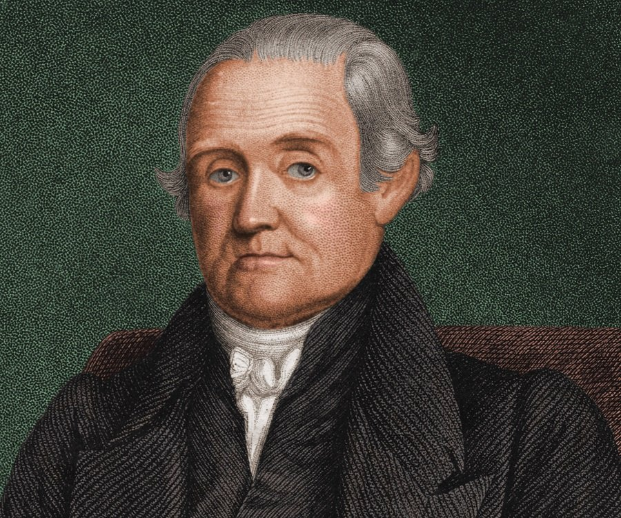
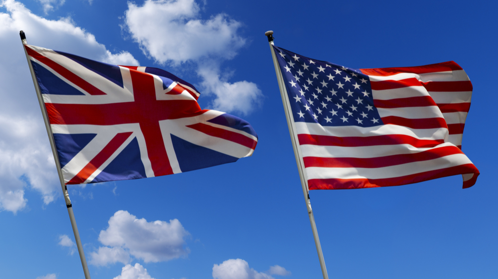
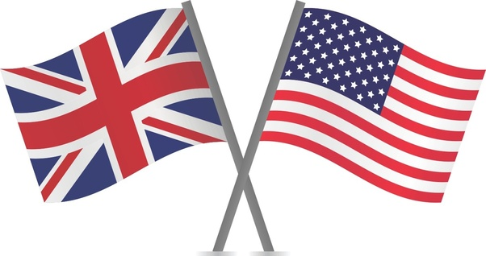

Английский язык привезли в Америку британские колонисты, первые из которых в 1607 году прибыли в Джеймстаун (Виргиния). Английский язык распространился и по другим территориям, колонизированным Британской империей. К 1921 году её население составляло около 470—570 миллионов человек или четверть населения всего мира на тот момент.
За последние 400 лет формы английского, используемые в Америке (особенно в США) и в Великобритании, немного изменились. Это привело к возникновению новых форм, известных как американский английский и британский английский. Отличия между ними затрагивают произношение, грамматику, словарный запас (лексику), некоторые нормы орфографии, пунктуацию, фразеологизмы и оформление дат и чисел. Тем не менее, отличия в данных сферах почти не влияют на взаимопонятность американского и британского вариантов. Например, некоторые слова одного варианта могут иметь иное значение или вообще не использоваться в другом.
Одним из первых различия описал создатель первого словаря американского английского Ноа Уэбстер. Именно он обратил внимание на то, что американцы говорят несколько иначе, нежели британцы. В 1828 году он опубликовал первый словарь американского английского — он существует и развивается до сих пор под именем Merriam-Webster. В своем словаре Уэбстер закрепил уже существовавшие на тот момент упрощенные варианты написания слов (mask вместо masque, racket вместо racquet) и предложил свои. Именно он решил отказаться от буквы u в словах вроде colour и humour, заменить -re на -er в словах вроде centre и theatre и писать jail вместо gaol. Причин для подобных изменений орфографии было две.  Во-первых, Уэбстер стремился сделать написание слов более логичным и приближенным к произношению. Для британцев внешний вид слов имел историческую ценность — отражал историю языка, — а для американцев это было не столь важно. Во-вторых, американцы намеренно противопоставляли себя Британии, и новая орфография должна была подчеркнуть независимость новой страны. В странах, оставшихся в составе Британской империи, такого стремления не было, поэтому орфография в австралийском, новозеландском и канадском английском совпадает с британской.Однако не все предложения Уэбстера оказались удачными. Американцы отказались писать ake вместо ache и soop вместо soup. Также людям не понравилась идея писать wimmen (women), masheen (machine) и tung (tongue), несмотря на всю логичность такого написания.Ну или не совсем так — просто в Америке ценят удобство выше академичности и не стесняются этого. Слишком сложно писать doughnut? Не беда, напишем donut. Слово through слишком длинное для дорожных знаков? Почему бы не написать thru, все равно всем понятно.Сюда же относятся lite (light), nite (night) и rite (right). Чаще всего они встречаются на вывесках и в рекламе. Эффективно и экономит место!Еще американцы любят пропускать слова в предложении. Например, на вопрос «Will you write to me?» или «Do you want to go shopping?» британец ответит полностью: «Yes, I’ll write to you» и «I could go». Для американца же достаточно сказать просто «Yes, I’ll write them» и «I could». Тот же смысл, а слов нужно использовать меньше.
Американский и британский варианты английского различаются незначительно и обладают взаимопонятностью.
При изучении английского многие из нас замечали нестыковки в написании самых простых на первый взгляд слов в разных источниках. Достаточно запомнить случаи, когда слова с определенным сочетанием букв или окончанием пишутся по-разному. Ни одно из этих написаний не является ошибкой, и они не заменяют друг друга. Просто каждая из стран использует свои устоявшиеся правила написания этих слов.
Чтобы понять, какое именно написание перед вами — британское или американское, достаточно всегда держать в голове одну важную мысль: американцы стараются все упростить. Поэтому в их варианте будет меньше букв, чем в британском, и в целом он будет проще.
Чаще всего вам встретится разница в окончаниях «-our» (BrE) и «-or» (AmE). Ниже написаны сравнение написания таких слов:
BrE:
colour, humour, neighbour, behaviour, labour, favourite, honour
AmE:
color, humor, neighbor, behavior, labor, favorite, honor
Еще один яркий пример — это окончания «-tre» (BrE) и «-ter» (AmE):
BrE:
centre, litre, theatre, spectre, metre
AmE:
center, liter, theater, specter, meter
Есть также некоторые слова, в которых британцы используют на конце «-nce», а американцы — «-nse»:
BrE:
pretence, defence, offence
AmE:
pretense, defense, offense
Но это правило работает не всегда. Так, британцы напишут глагол «practise» (практиковать) с «s», в то время, как американцы напишут и глагол, и существительное «practice» через «с».
Аналогично, американцы не всегда стремятся убрать лишние буквы. Во многих словах, где британцы используют всего одну согласную «l», в американском варианте она двойная.
BrE:
skilful, fulfil, instalment, appal, enrol
AmE:
skillful, fulfill, installment, appall, enroll
Еще несколько частых случаев различия в написании слов британского и американского английского:
aluminium (BrE) — aluminum (AmE)
analyse (BrE) — analyze (AmE)
catalogue (BrE) — catalog (AmE)
cheque (BrE) — check (AmE)
jewellery (BrE) — jewelry (AmE)
pyjamas (BrE) — pajamas (AmE)
programme (BrE) — program (AmE)
tyre (BrE) — tire (AmE)
traveller (BrE) — traveler (AmE)
whisky (BrE) — whiskey (AmE)
Что касается написания аббревиатур и сокращений, таких как limited (общество с ограниченной ответственностью), doctor (доктор), mister (мистер) и других, то в современном британском английском они употребляются без точки на конце. А вот американцы ставят точки на письме после этих же самых сокращений. Например:
Limited — Ltd (BrE) vs. Ltd. (AmE)
Mister — Mr (BrE) vs. Mr. (AmE)
Doctor — Doc (BrE) vs. Doc. (AmE)
Ох, уж этот хваленый британский акцент! Он известен далеко за пределами Англии, ему стараются подражать и учить именно «правильный английский», которым по умолчанию является британский.
Для краткости введем основные понятия, известные во всем мире. Британский английский (British English) сокращается как BrE, а американский английский (American English) — как AmE.
Разница существует не только между этими вариантами, но и внутри каждой страны. Так, на юге США говорят совершенно иначе, чем в Нью-Йорке, а в Эдинбурге (Шотландия) имеются свои особенности, не характерные, например, жителям Лондона.
Одно из самых ярких различий — это опускание британцами звука [r], если он стоит после гласной. Например, такие слова, как car, turn, cover и другие, житель Англии произнесет без «р» на конце, в то время, как от американца вы четко услышите этот звук. Поэтому транскрипция слова bird (птица) в BrE будет выглядеть как [ bɜːd ], а в AmE как [ bɝːd ].
Другие отличия:
Произношение гласной «u»
Американский вариант произношение этой буквы в словах — [u:], а британский — более мягкий и свистящий [juː]. Например:
duty — BrE [ ˈdʒuːti ] vs. AmE [ ˈduːt̬i ]
new — BrE [njuː] vs. AmE [nuː]
tune — BrE [tju:n] vs. AmE [tu:n]
и другие.
Произношение гласной «a»
Если в слове встречается гласная буква «а» + любая согласная после нее, то британцы произносят этот звук как глубокое [α:], округлив рот. А вот американцы часто выговаривают этот звук как [æ], которое звучит как что-то средние между «а» и «э». Например:
ask — BrE [α:sk] vs. AmE [æsk]
bath — BrE [bα:θ] vs. AmE [bæθ]
last — BrE [lα:st] vs. AmE [læst]
after — BrE [′α:ftə] vs. AmE [ ˈæftɚ ]
Обратите внимание, что последнее слово after (после) отличается не только первым звуком «а», но и отсутствием «r» в британском варианте произношения.
Слова, оканчивающиеся на безударное «-ile» (missile, fertile и др.)
В большинстве случаев, британец произнесет это окончание более полно, как [aɪl], а американец просто как [l]. Например:
fertile — BrE ['fɜːta i l] vs. AmE [ ˈfɝːt̬l ]
Длинные слова с окончаниями «-ery», «-ary», «-ory»
В британском английском один звук из этих окончаний выпадает, в то время как в американском они получаются на один слог длиннее. Например:
secretary — BrE ['sekrətr i ] vs. AmE ['sekrə'ter i ]
monastery — BrE [ ˈmɒnəstri ] vs. AmE [ ˈmɑːnəsteri ]
inventory — BrE [ ˈɪnv ə ntri ] vs. AmE [ ˈɪnv ə ntɔːri ]
и другие
Разница в ударении
Как правило, американцы делают дополнительное ударение в словах, в которых 2 и более слогов. Это правило довольно тесно связано с предыдущим, ведь в AmE бывает на один слог больше. Например, в том же слове secretary. В варианте BrE ударение ставится только на первый слог ['sekrətr i ], в то время, как в AmE появляется дополнительное ударение на второй букве «e»: ['sekrə'ter i ].
Кроме того, некоторые слова могут иметь абсолютно разное ударение. Например:
ballet — BrE [ˈbæleɪ] vs. AmE [bælˈeɪ]
debris — BrE [ˈdebriː] vs. AmE [dəˈbriː]
autumn (BrE) – fall (AmE) — осень
barrister (BrE) — lawyer (AmE) — адвокат
bill (BrE) — check (AmE) — чек
engaged (BrE) — busy (AmE) — занято (о телефонной линии)
engine (BrE) — motor (AmE) — мотор
film (BrE) — movie (AmE) — фильм
fortnight (BrE) — two weeks (AmE) — две недели (полмесяца)
garden (BrE) — yard (AmE) — двор
gearbox (BrE) — transmission (AmE) — коробка передач
high street (BrE) — main street (AmE) — главная улица
holiday (BrE) — vacation (AmE) — отпуск
lift (BrE) — elevator (AmE) — лифт
lorry (BrE) — truck (AmE) — грузовик
mad (BrE) — crazy (AmE) — сумасшедший
motorway (BrE) — highway (AmE) — шоссе
nasty (BrE) — mean (AmE) — гадкий
pavement (BrE) — sidewalk (AmE) — тротуар
pocket money (BrE) — allowance (AmE) — карманные деньги
post (BrE) — mail (AmE) — почта
postman (BrE) — mailman (AmE) — почтальон
pub (BrE) — bar (AmE) — бар
public toilet (BrE) — restroom (AmE) — общественный туалет
queue (BrE) — line (AmE) — очередь
railway (BrE) — railroad (AmE) — железная дорога
return ticket (BrE) — round trip (AmE) — билет «туда и обратно»
rubber (BrE) — eraser (AmE) — ластик
rubbish (BrE) — garbage (AmE) — мусор
sellotape (BrE) — scotch tape (AmE) — скотч
shop (BrE) — store (AmE) — магазин
shop assistant (BrE) — store clerk (AmE) — консультант (в магазине)
timetable (BrE) — schedule (AmE) — расписание
trainers (BrE) — sneakers (AmE) — кроссовки
torch (BrE) — flashlight (AmE) — фонарик
wardrobe (BrE) — closet (AmE) — гардероб
windscreen (BrE) — windshield (AmE) — лобовое стекло
zip (BrE) — zipper (AmE) — застежка-молния